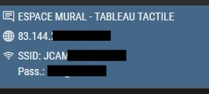

B2 Internship (2025) · Knowledge ↔ Training / Monitoring
Learning & Resources
Knowledge ↔ Training / Monitoring
VIApass
Palais des Festivals (Cannes)
Network Operations
Knowledge Mobilized (Coursework → Field)
- Networks & Security: VLANs, QoS/prioritization, segmentation by profile, operation best practices.
- Monitoring · SLI/SLO: selection of useful indicators (RSSI/SNR, median throughput, availability), adapted thresholds, actionable alerting.
- ITIL / Incidents: structured ticketing (who/what/where/when), escalation, RCA (Root Cause Analysis), capitalization.
- Docs & Diagrams: unified legends, homogeneous naming, non-sensitive "public" version.
Monitoring & Observed Best Practices
- "Event" Dashboard: readable synthesis + drill-down by priority zone.
- Pre-opening Checklists (network points, Wi-Fi, audiovisual gateways).
- Short Debrief Ritual: 3 takeaways → 3 actions for the next day.
- Living Documentation: shared templates, clear versioning, public views ready for distribution.
Useful Mini-Glossary
- RSSI: Received Signal Strength Indication. The higher, the better.
- SNR: Signal-to-Noise Ratio. Measures radio "cleanliness."
- Median Throughput: typical value experienced by users (less sensitive to extremes).
- NOC: Network Operations Center (monitoring, correlation, prioritization).
In Images

Local Communication: anonymized maps for staff/booths.
 Documentation: reusable public views (unified legends and naming).
Documentation: reusable public views (unified legends and naming).